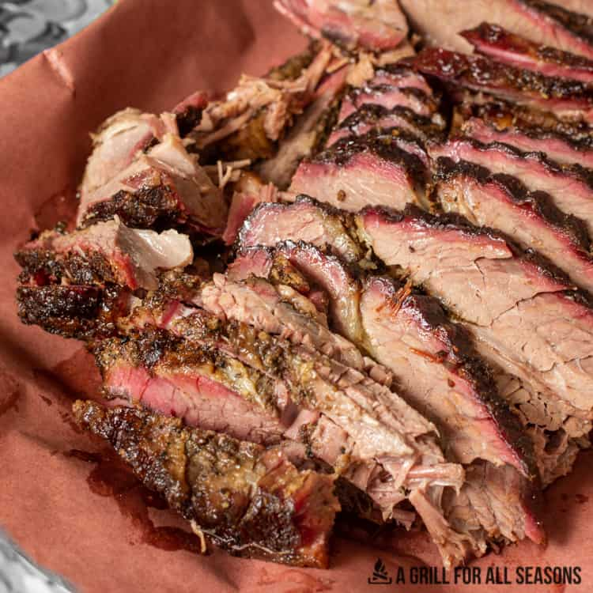

Traeger Brisket

Description
Smokey, fall apart, melt in your mouth, so delicious smoked beef brisket. It could very easily be the best part of the weekend. Time to try this Traeger Brisket recipe.
One of my favorite parts is the thick tasty bark that develops on a brisket from the long smoke. It adds flavor but also helps keep all those lovely juices inside to cook and break down the brisket. Low and slow is the name of the game here.
Ingredients
- 1/4 cup salt
- 1/4 cup pepper
- 1/4 garlic powder
- 13lb whole brisket
Directions
- Trim excess fat from the brisket. Be sure to locate the ridge of fat between the point and the flat. The fat cap side should be cut down to only have ¼" of fat on that side.
- Season the meat with salt, pepper, and garlic powder.
- Once seasoned, let the brisket rest in the refrigerator for at least two hours (up to a day).
- Preheat your smoker or pellet grill to 225°F. Once it is preheated, place the brisket on with the fat side up. Cook until the internal temperature reaches 170°F.
- Once the brisket reaches 170°F, wrap it in butcher paper and place it back in the smoker at 225°F. Cook until the internal temperature reaches 202°F.
- Once the brisket reaches 202°F. Remove from grill. Let it rest for at least 2 hours. I recommend wrapping it in a towel and placing it in a cooler while it rests.
- After the brisket has finished resting, slice and serve. Be sure to slice the brisket against the grain. The flat and the point have a different direction of grain by about 90 degrees.